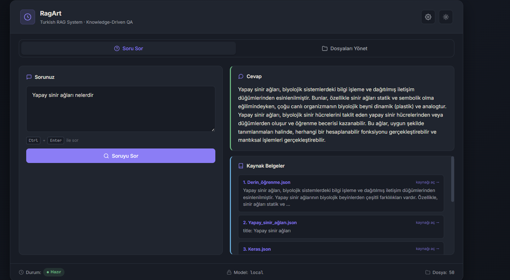
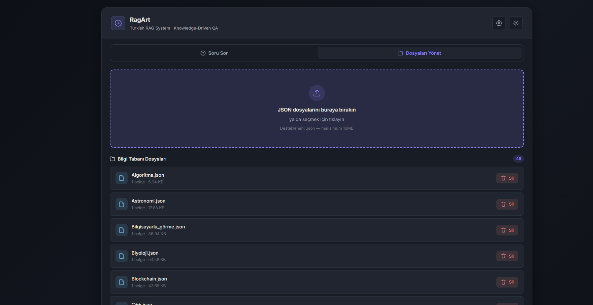
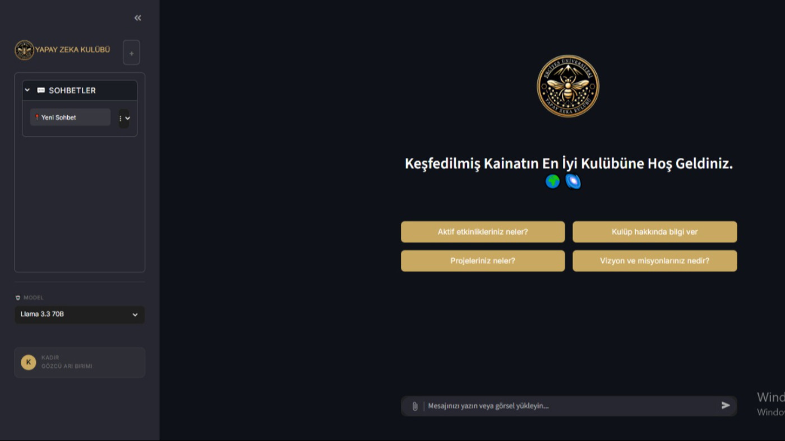

Hakkımda
Erciyes Üniversitesi Bilgisayar Mühendisliği son sınıf öğrencisiyim. Yapay zeka, özellikle Büyük Dil Modelleri (LLM) ve Retrieval-Augmented Generation (RAG) sistemleri üzerine odaklanıyorum. Üniversitemde Yapay Zeka Kulübü'nü kurarak, NLP ve LLM konularında teknik eğitim programları yönetiyorum.
Üretim kalitesinde RAG pipeline'ları, hibrit arama mimarileri ve LLM değerlendirme mekanizmaları geliştiriyorum. Docker ile konteynerize edilmiş, CI/CD süreçleriyle otomasyona alınmış projeler üzerinde çalışıyorum.
Programlama
ML & NLP
LLM Sistemleri
RAG & Retrieval
Altyapı
Değerlendirme
Projeler

BM25 ve Cross-Encoder destekli Hibrit Arama mimarisi ile üretim kalitesinde Türkçe RAG sistemi. 4 katmanlı değerlendirme mekanizması, Docker ile konteynerize, 174 test senaryosu ile güvenilir dağıtım.
GitHubTürk hukuku için özelleştirilmiş soru-cevap ve dilekçe üretim sistemi. RAG mimarisi ile halüsinasyon azaltılmış, LoRA fine-tuning ile cevap kalitesi artırılmıştır.

VS Code eklentisi olarak geliştirilen LLM tabanlı otomatik birim test üretim sistemi. Yapılandırılmış prompting ve Chain-of-Thought (CoT) teknikleriyle test doğruluğu artırıldı; self-debug döngüsü ile >%80 Branch ve Line Coverage sağlandı.

Erciyes Üniversitesi Yapay Zeka Kulübü için geliştirilen, kulüp etkinlikleri ve projeleri hakkında bilgi veren interaktif sohbet botu. LLM tabanlı, doğal dil ile etkileşim.
Deneyim
2024 – Devam Ediyor
RAG & Agent Systems
Remote
2024 – Devam Ediyor
ERU Yapay Zeka Kulübü
Kayseri, Turkey
2025
Erciyes Technopark — FOMOTECH
Kayseri, Turkey
Eğitim
Erciyes Üniversitesi
2021 – 2026 · Kayseri, Turkey
İletişim